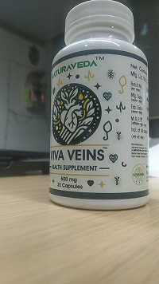

"वैरिकाज़ नसें अपने आप गायब नहीं होतीं. मैं 20 वर्षों से जहाज़ों का उपचार कर रहा हूँ और जानता हूँ कि लोग चीज़ों को केवल बदतर क्यों बनाते हैं"

डॉ. अरविन्द सिंह
डॉ. अरविन्द सिंह
 मुंबई, भारत
मुंबई, भारत
आज हमने डॉ से बात की. अरविन्द सिंह - 20 वर्षों से अधिक के अनुभव वाले मुंबई के एक संवहनी विशेषज्ञ
उन्होंने स्पष्ट रूप से साझा किया कि मानक उपचार क्यों काम नहीं करता है, और क्या वास्तव में पैर के स्वास्थ्य को बहाल करने में मदद करता है .

रिपोर्टर: डॉक्टर, आज नसों की समस्याएँ कितनी व्यापक हैं?
चिकित्सक:
ईमानदारी से कहूँ तो - यह एक बहुत बड़ी समस्या है.
विशेष रूप से भारत में
मैं कहूंगा कि 35 के बाद आधे से अधिक लोगों में पहले से ही पहले लक्षण होते हैं:
-भारीपन
-सूजन
-संवहनी नेटवर्क
लेकिन अधिकांश लोग इसे कोई बीमारी ही नहीं मानते हैं।
रिपोर्टर:
लोग इसे नज़रअंदाज़ क्यों करते हैं?
चिकित्सक:
क्योंकि लक्षण धीरे-धीरे प्रकट होते हैं.
सबसे पहले यह है: "बस थके हुए पैर"
फिर: "ठीक है हाँ, थोड़ी सूजन" और फिर व्यक्ति पहले से ही दर्द के साथ जी रहा है - और इसे सामान्य मानता है.
रिपोर्टर: तो यह एक गलती है?
चिकित्सक:
एक बड़ी गलती. क्योंकि वैरिकाज़ नसें कॉस्मेटिक नहीं हैं.यह एक परिसंचरण समस्या है.

"वैरिकाज़ नसें कॉस्मेटिक नहीं हैं. यह एक परिसंचरण समस्या है"
-डॉ. अरविन्द सिंह
रिपोर्टर: सरलता से समझाएं - शरीर में क्या होता है?
चिकित्सक:
बहुत ही सरलता से .
रक्त को शिराओं के माध्यम से ऊपर उठना चाहिए. लेकिन जब वाहिकाएं कमजोर हो जाती हैं तो यह स्थिर हो जाती है.
परिणामस्वरुप:
-नसों में दबाव बढ़ जाता है
-दीवारें खिंच जाती हैं
-दिखाई देने वाली नसें दिखाई देने लगती हैं
रिपोर्टर: और यह समय के साथ तीव्र होता जाता है?
चिकित्सक:
हाँ. हमेशा.
बिना उपचार के, स्थिति और भी खराब हो जाती है.
रिपोर्टर: फिर फार्मेसी उपचार समस्या का समाधान क्यों नहीं करते?
चिकित्सक:
क्योंकि उनमें से अधिकांश:
-लक्षणों से राहत
-शांत
-अस्थायी रूप से सूजन को कम करते हैं
लेकिन वाहिकाओं को बहाल न करें.
रिपोर्टर: फिर फार्मेसी उपचार समस्या का समाधान क्यों नहीं करते?
चिकित्सक:
सटीक रूप से .
एक व्यक्ति बेहतर महसूस करता है - और सोचता है कि उसका इलाज किया जा रहा है.
लेकिन प्रक्रिया जारी रहती है.
जानना महत्वपूर्ण है
अधिकांश फार्मेसी उपचार संवहनी समस्याओं के मूल कारण को संबोधित किए बिना केवल अस्थायी लक्षण राहत प्रदान करते हैं. इससे उपचार के बारे में गलत धारणा पैदा हो सकती है जबकि स्थिति बढ़ती रहती है।

रिपोर्टर: यह वास्तव में कब खतरनाक हो जाता है?
चिकित्सक:
जब ये दिखाई देते हैं:
-गंभीर दर्द
-रात में ऐंठन
-नसों का उच्चारण
-त्वचा का मलिनकिरण
यह पहले से ही एक संकेत है कि प्रक्रिया बहुत आगे बढ़ गई है.
रिपोर्टर: आपका क्या मतलब है?
चिकित्सक:
यदि आप जहाजों को पुनर्स्थापित नहीं करते हैं - तो समस्या वापस आ सकती है .
"सर्जरी हमेशा कारण का समाधान नहीं करती. यदि आप जहाजों को पुनर्स्थापित नहीं करते हैं — समस्या वापस आ सकती है."
-डॉ. अरविन्द सिंह
रिपोर्टर:
तो फिर आप किस दृष्टिकोण को सही मानते हैं?
चिकित्सक:
विस्तृत. आपको यह करने की आवश्यकता है:
-सूजन कम करें
-वाहिकाओं को मजबूत करें
-रक्त प्रवाह बहाल करें
रिपोर्टर: क्या ऐसे उपाय हैं जो ऐसा करते हैं?
चिकित्सक:
हां, अब और भी आधुनिक समाधान सामने आए हैं.
उनमें से एक — VIVA VEINS.

चिरायु नसें
संवहनी स्वास्थ्य के लिए आधुनिक समाधान
रिपोर्टर: आप इसे अलग-अलग क्यों बता रहे हैं?
चिकित्सक:
क्योंकि यह व्यवस्थित रूप से काम करता है. न केवल "लागू करें और बेहतर महसूस करें" बल्कि विशेष रूप से
-वाहिकाओं को प्रभावित करता है
-परिसंचरण में सुधार करता है
-भार कम करता है

रिपोर्टर: क्या आप अधिक सरलता से समझा सकते हैं?
चिकित्सक:
कल्पना कीजिए कि बर्तन पाइप हैं. यदि वे कमज़ोर हैं - तो सिस्टम ख़राब तरीके से काम करता है. VIVA VEINS मदद करता है: इस प्रणाली को "ठीक" करें
रिपोर्टर:
आप मरीज़ों में क्या परिणाम देखते हैं?
चिकित्सक:
बहुत महत्वपूर्ण. उदाहरण के लिए:
महिला, 48 वर्ष:
-गंभीर सूजन
-शाम तक दर्द
3 सप्ताह के बाद:
-सूजन लगभग खत्म हो गई
-दर्द कम हो गया

अपेक्षित परिणाम समयरेखा
सप्ताह 1
पैर हल्के महसूस होते हैं
सप्ताह 2-3
कम सूजन
महीना 1
दृश्य परिवर्तन
रिपोर्टर: क्या यह सुरक्षित है? क्या कोई भी दुष्प्रभाव हैं?
चिकित्सक:
हाँ, उचित उपयोग के साथ. अधिकांश मामलों में — नहीं
रिपोर्टर: आप किसे अभी शुरुआत करने की सलाह देते हैं?
चिकित्सक:
यदि आपके पास कम से कम एक लक्षण है:
-भारीपन
-थकान
-सूजन
-नसें
इंतजार न करें.
बहुत देर हो जाने तक प्रतीक्षा न करें
यदि आपमें इनमें से कोई भी लक्षण है, तो उन्हें नज़रअंदाज़ न करें:
पैरों में भारीपन
दीर्घकालिक थकान
सूजन (विशेषकर शाम के समय)
दृश्यमान नसें या स्पाइडर नस
"दर्द मत सहो. यह सामान्य नहीं है. और इसे बदला जा सकता है."
-डॉ. अरविन्द सिंह
वास्तविक रोगी कहानियाँ
"3 सप्ताह के बाद, मेरे पैर 10 साल छोटे महसूस हुए!"
प्रिया शर्मा, 52
दिल्ली

"अब रात की ऐंठन नहीं होगी. मैं अब शांति से सोता हूं"
राजेश कुमार, 45
मुंबई
"सूजन नाटकीय रूप से कम हो गई. बहुत आभारी हूँ!”
लक्ष्मी देवी, 58
चेन्नई
"वाइवा वेन्स की बदौलत सर्जरी टाली गई!"
अमित पटेल, 41
बैंगलोर
विशेष पेशकश - जीतने के लिए स्पिन करें!
अपनी विशेष छूट प्राप्त करें
अक्सर पूछे जाने वाले प्रश्नों
शुरुआती बदलाव — पैरों में भारीपन, सूजन और थकान का कम होना — अधिकांश उपयोगकर्ता नियमित उपयोग के केवल 7-10 दिनों के भीतर महसूस करते हैं। दृश्य प्रभाव (मकड़ी जैसी नसों का कम दिखना) आमतौर पर 3-4 सप्ताह के उपयोग के बाद दिखाई देने लगता है, क्योंकि रक्त वाहिकाओं की दीवारों को मजबूत होने में समय लगता है।
हाँ, यह उत्पाद प्राकृतिक अवयवों के आधार पर विकसित किया गया है और बाहरी उपयोग के लिए है, जो प्रणालीगत दुष्प्रभावों के जोखिम को न्यूनतम करता है।
स्थायी और संचयी प्रभाव प्राप्त करने के लिए 30 से 45 दिनों के कोर्स की सिफारिश की जाती है। वैरिकोज वेन्स के उन्नत चरणों में, एक छोटे अंतराल (2 सप्ताह) के बाद कोर्स दोहराया जा सकता है या रोकथाम के लिए नियमित आधार पर उपयोग किया जा सकता है।
हाँ, हम Cash on Delivery सेवा प्रदान करते हैं। आप डाकघर में या कूरियर से सामान प्राप्त करते समय नकद या कार्ड से भुगतान कर सकते हैं। यह आपकी खरीदारी की सुरक्षा की गारंटी देता है।
असली उत्पाद ब्रांडेड पैकेजिंग में आता है जिसमें स्पष्ट फोंट, समाप्ति तिथि और बैच नंबर का उल्लेख होता है।
हर व्यक्ति का शरीर अद्वितीय होता है, और बाहरी उत्पादों की प्रभावशीलता बीमारी के चरण और जीवनशैली पर निर्भर करती है। यदि पूरा कोर्स पूरा करने के बाद भी आपको सुधार नहीं दिखता है, तो हम फ्लीबोलॉजिस्ट (नसों के डॉक्टर) से परामर्श करने की सलाह देते हैं, क्योंकि आपको जटिल चिकित्सा (जैसे कंप्रेशन स्टॉकिंग्स या मौखिक दवाओं) की आवश्यकता हो सकती है।
डिलीवरी का समय आपके क्षेत्र पर निर्भर करता है:
बड़े शहर: 1-3 कार्य दिवस।
दूरदराज के क्षेत्र: 4-7 कार्य दिवस।
VIVA VEINS अधिकांश दवाओं के साथ अच्छी तरह से काम करता है। हालांकि, यदि आप डॉक्टर द्वारा बताए गए अन्य मलहम या क्रीम का उपयोग कर रहे हैं, तो उनके उपयोग के बीच 30-60 मिनट का अंतराल रखें। यदि आप गंभीर थक्का-रोधी (खून पतला करने वाली) दवाएं ले रहे हैं, तो बेहतर होगा कि पहले अपने डॉक्टर से अनुकूलता की पुष्टि कर लें।

बोरा
मुझे माफ़ करें! मैं इस बात की पुष्टि करता हूँ! सर्वाधिकार सुरक्षित।. सर्वाधिकार सुरक्षित।. मुझे बहुत अच्छा लग रहा है!


आरती
मैंने NATURAVEDA™ VIVA VEINS™ के बारे में सारी जानकारी उनकी वेबसाइट पर पढ़ी. आश्चर्यजनक और प्रभावशाली!

मनीष
मैं ऑफर का लाभ उठाने में कामयाब रहा! धन्यवाद!

प्रतीक
मैंने एक महीने तक (रुक - रुक कर ) अपना इलाज किया. मैं बेहतर महसूस कर रहा हूँ. मैं शक्ति और ऊर्जा से भरा हुआ
हूं, मैंने अपनी प्रतिरक्षा प्रणाली को मजबूत किया. मुझे लगता है कि मैं १० साल छोटा हो गया
हूँ. मैं ७२ साल का हूं.
अवंतिका
दो महीने पहले, मैंने NATURAVEDA™ VIVA VEINS™ के साथ नसों का उपचार भी किया. तब मेरी नसें भरी हुई थी, तो मैं
हमेशा बहुत थका हुआ महसूस करती थी, अब मैं बहुत ऊर्जावान हूं. मैं दिन के दौरान
अधिक काम करने का प्रबंधन करती हूं. मेरे सिरदर्द की समस्या भी अब चली गयी है. मुझे बेहतर नींद आती है. मैंने
कुछ और पैक का ऑर्डर कर दिया है. धन्यवाद!

रितिका
धन्यवाद! लेख बहुत ही रोचक है. मैंने पहले ही NATURAVEDA™ VIVA VEINS™ का ऑर्डर दे दिया है.

राज
मैंने NATURAVEDA™ VIVA VEINS™ को पहले ही खरीद लिया है और परीक्षण कर लिया है. मैं ७ साल से उच्च रक्तचाप से
पीड़ित हूं. मैं अपने जीवन में उस समय को याद नहीं कर सकता जब मुझे सामान्य
रक्तचाप था. डॉक्टर की सिफारिश पर, मैंने फैसला किया कि मुझे अपनी नसों को साफ करना है. NATURAVEDA™ VIVA VEINS™
के साथ एक महीने के उपचार के बाद, मेरे रक्तचाप सामान्य हो गया! मुझे
२ महीने हो चुके हैं, मुझे अब उच्च रक्तचाप नहीं है. यह एक अलग जीवन है. मैं एक हजार गुना बेहतर महसूस करता हूं.
मैं हर किसी के लिए इस उत्कृष्ट उपाय की सिफारिश करता हूं, और इस छूट के साथ, यह
किसी उपहार से कम नहीं है.

मीनाक्षी
मैंने एक महीने तक NATURAVEDA™ VIVA VEINS™ से भी अपना इलाज कराया. मैं स्वस्थ और तंदरूस्त महसूस करती हूँ. मैं जवां महसूस कर रही हूं.
सौम्या
धन्यवाद. मैंने इसका आदेश दिया. मैं इस तथ्य को पसंद करती हूँ कि यह हर जगह डाक द्वारा पहुंचाया जाएगा.
नेहा
एक महीने पहले, मैंने NATURAVEDA™ VIVA VEINS™ के साथ इलाज शुरू किया. कभी-कभी, मुझे उच्च रक्तचाप और अनियमित
हृदय लय की दिक्कत थी. मैं इसका २ सप्ताह से उपयोग कर रहा हूँ.
रक्तचाप सामान्य पर वापस आ गया. मैं पूरी तरह से स्वस्थ महसूस कर रही हूँ.

रितिक
क्या किसी ने ये प्रोडक्ट आधिकारिक वेबसाइट से आर्डर दिया है। मैं भी इसे आर्डर करना चाहता हूँ और नकली उत्पाद में नहीं पड़ना चाहता।

मालिनी
हाँ! हमने इसे आधिकारिक वेबसाइट से आर्डर दिया था और हमे डिस्काउंट भी मिला था। मैंने इसे अपने पति के लिए आर्डर
किया था। इसके परिणाम अच्छे है और मेरे पति अब अब पहले से बेहतर महसूस करते
हैं।

अर्पित
मैं भी इसे आर्डर करना चाहता हूँ
अनामिका
मैं ६१ साल का हूं. मैंने ५ साल पहले नसों को साफ करने के उपचार को शुरू किया था. वे मुझे अपना स्वास्थ्य बनाए
रखने और मुझे शक्ति देने में मदद करते हैं. मुझे कोई बीमारी नहीं है, हालांकि मेरे कई साथी पहले
ही मर चुके हैं. मैं अभी भी सेक्स करता हूं, खुलकर बोलने के लिए मुझे क्षमा करें. रक्त वाहिकाओं को साफ करने के
लिए यह बिल्कुल आवश्यक है!
पंखुड़ी
मैंने इस दवा के साथ अपने उच्च रक्तचाप का इलाज किया. मैं कई वर्षों से इससे पीड़ित हूं. समय के साथ, मुझे
मधुमेह और गुर्दे की समस्या भी हो गई. स्मृति और दृष्टि दोष. मैंने बिना किसी प्रभाव के बहुत सारे
उपचार किए. मैंने NATURAVEDA™ VIVA VEINS™ का परीक्षण करने का फैसला किया. यह पहली बार था जब मैंने इंटरनेट पर
दवाओं का ऑर्डर दिया. यह बहुत ही आसान था.